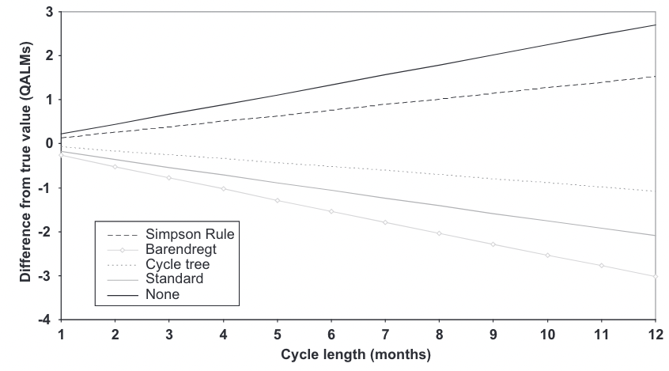

EPIB 676 session 5, McGill University
1/18/23
Capturing health-economic outcomes
Correcting discrete time error
Capturing epidemiological outcomes
Differential equation models
Transition matrix (\(n_s \times n_s\), where \(n_s\) is the number of states)
\[ P = \begin{array}{c}\begin{matrix}Healthy & moderate & severe & dead \end{matrix} \\\left[\ \begin{matrix} p_{H \rightarrow H} & p_{H \rightarrow M} & p_{H \rightarrow S} & p_{H \rightarrow D}\\ p_{M \rightarrow H} & p_{M \rightarrow M} & p_{M \rightarrow S} & p_{M \rightarrow D}\\ p_{S \rightarrow H} & p_{S \rightarrow M} & p_{S \rightarrow S} & p_{S \rightarrow D}\\ p_{D \rightarrow H} & p_{D \rightarrow M} & p_{D \rightarrow S} & p_{D \rightarrow D} \end{matrix}\ \right] \end{array} \]
initial distribution: \(m_0 = \begin{bmatrix} 2000 & 0 & 0 & 0 \end{bmatrix}\)
Cycle length: 1 year; Number of cycles: \(T=20\)
Store distribution in matrix \(M\), with \(n_s\) columns and \(T+1\) rows
If transition probabilities depend on simulation time (e.g., background mortality) use 3D time-dependent transition array \(P\), where \(P[i,j,t]\) is probability of transitioning from \(i\) to \(j\) in cycle \(t\)
Costs, health state utility can be added to a cohort model in two ways:
Per cycle spent in a state (state reward)
Per transition (transition reward/toll)
Must assign same rewards to everyone in the same state or making transition. Only way to introduce heterogeneity is making more models or states
Per-cycle reward for each state stored as a \(1 \times n_s\) reward vector:
\[ \textbf{c} = \begin{bmatrix} c_{H} & c_{M} & c_{S} & c_{D} \end{bmatrix}\\ \textbf{q} = \begin{bmatrix} q_{H} & q_{M} & q_{S} & q_{D} \end{bmatrix} \]
For cycle \(t\), multiply (using %*%) state vector \(m_t \times \textbf{c}^T\) for costs in each state; \(m_t \times \textbf{q}^T\) for QALYs in each state
In r, m_t %*% t(c_states)
(or use \(n_s \times 1\) column vectors so you don’t need to transpose)
Costs or QALYs can change when specific transitions made
Create \(n_s \times n_s\) reward matrix for each outcome (e.g., \(C\) for cost, \(Q\) for QALYs)
Every entry of column for state \(j\) has \(c_j\) (or \(q_j\))
On diagonal \(C[j,j]\), it’s always just \(c_j\)
Off diagonal \(C[i,j]\), can add/subtract a reward for \(i \rightarrow j\) transition
rewards per state in cycle \(t\) given by \(\hat{C}_{t} = m_{t-1} ( P \bigodot C)\) where \(\bigodot\) indicates element-wise multiplication
\[ \textbf{C}= \begin{bmatrix} c_H & c_M+c_{H \rightarrow M} & c_S+c_{H \rightarrow S} & c_D+c_{H \rightarrow D}\\ c_H+c_{M \rightarrow H} & c_M & c_S+c_{M \rightarrow S} & c_D+c_{M \rightarrow D}\\ c_H+c_{S \rightarrow H} & c_M+c_{S \rightarrow M} & c_S & c_D+c_{S \rightarrow D}\\ c_H+c_{D \rightarrow H} & c_M+c_{D \rightarrow M} & c_S+c_{D \rightarrow S} & c_D \end{bmatrix},\\ \textbf{Q} = \begin{bmatrix} q_H & q_M+q_{H \rightarrow M} & q_S+q_{H \rightarrow S} & q_D+q_{H \rightarrow D}\\ q_H+q_{M \rightarrow H} & q_M & q_S+q_{M \rightarrow S} & q_D+q_{M \rightarrow D}\\ q_H+q_{S \rightarrow H} & q_M+q_{S \rightarrow M} & q_S & q_D+q_{S \rightarrow D}\\ q_H+q_{D \rightarrow H} & q_M+q_{D \rightarrow M} & q_S+q_{D \rightarrow S} & q_D \end{bmatrix} \]
Reward matrix assumes costs/QALYs don’t depend when person is in the state
Can have rewards depend on cycle by adding 3rd dimension (3D reward array)
\(\textbf{C}[i,j,t]\) and \(\textbf{Q}[i,j,t]\) are cost/QALYs of transition from state \(i\) to \(j\) in cycle \(i\)
\(\hat{C}_t =m_{t-1} (P \bigodot C[:,:,t])\) or \(\hat{Q}_t = m_{t-1} (P \bigodot Q[:,:,t])\) gives costs/QALYs in each state in cycle \(t\)
If you don’t like 3D arrays, an alternative is to generate cycle-specific 2D matrices within your for loop
#Pseudocode, won't run without modifications
mat_M <- matrix(0, ncol=4, nrow = n_cycles+1,
dimnames = list(0:n_cycles, c("H","M","S","D")))
v_costs_per_cycle <- matrix(0, nrow = ncycles, ncol=1)
v_QALYs_per_cycle <- matrix(0, nrow = ncycles, ncol=1)
mat_M[1, ] <- m_0 # initial distribution
for(i in 1:n_cycles){
mat_P_cycle <- NA # Calculate transition matrix for this cycle
mat_C_cycle <- NA # Calculate cost reward matrix for this cycle
mat_Q_cycle <- NA # Calculate QALY reward matrix for this cycle
M[i+1,] <- M[i,] %*% mat_T_cycle #update cohort distribution
v_costs_per_cycle[i] <- sum(M[i+1,] %*% mat_C_cycle) #calculate costs
v_QALYs_per_cycle[i] <- sum(M[i+1,] %*% mat_Q_cycle) #calculate QALYs
}To get net present outcomes, we must discount.
Can create “discount multiplier vector” to apply for cost and outcomes from each cycle
disc_rate = 0.03; cycle_length = 0.5; n_cycles = 10
disc_mults <- 1/((1+(disc_rate*cycle_length))^(0:n_cycles))
disc_mults [1] 1.0000000 0.9852217 0.9706617 0.9563170 0.9421842 0.9282603 0.9145422
[8] 0.9010268 0.8877111 0.8745922 0.8616672 [1] 1000.0000 985.2217 970.6617 956.3170 942.1842 928.2603 914.5422
[8] 901.0268 887.7111 874.5922 861.6672[1] 10222.18Capturing health-economic outcomes
Correcting discrete time error
Capturing epidemiological outcomes
Differential equation models
Transition probabilities are cumulative probability of transitioning during a cycle
In an uncorrected model, transitions only occur at end of cycle
In actual process, transitions are randomly distributed across cycle duration
[Naimark et. al. 2013](www.doi.org/10.1177/0272989X13501558)
As cycle length \(\rightarrow\) 0, discretization error \(\rightarrow\) 0.
But, more cycles means more compute needed, and may lead to less interpretable probabilities
Fortunately, we have other correction methods
[Srivastava et. al. 2020](https://doi.org/10.1101/2020.07.27.20162651)
Numerical process to approximate integrating a curve
Simpson’s 1/3rd method (quadratic approximation; requires even number of cycles):
Multiply reward by 1/3 for first and last cycle
In between, multiply by 4/3 for odd cycles and 2/3 for even
Simpson’s 3/8 method (cubic approximation; requires that number of cycles are multiple of 3):
Multiply reward by 3/8 in first and last cycle
In between, multiply by 6/8 if mult. of 3 and 9/8 otherwise
Intuition: If on average individuals transition halfway through a cycle, they should incur half the cost (QALY) associated with their “from” state and half the cost (QALY) of their “to” state
Can be implemented as like transition rewards in a reward matrix
\(\hat{C}_t =m_{t-1} (T \bigodot C)\) or \(\hat{Q}_t =m_{t-1} (T \bigodot Q)\) with C and Q as given on next slide
\[ \textbf{C}= \begin{bmatrix} c_H & .5c_H+.5c_M & .5c_H+.5c_S & .5c_H+.5c_D\\ .5c_M+.5c_H & c_M & .5c_M+.5c_S & .5c_M+.5c_D\\ .5c_S+.5c_H & .5c_S+.5c_M & c_S & .5c_S+.5c_D\\ .5c_D+.5c_H & .5c_D+.5c_M & .5c_D+.5c_S & c_D \end{bmatrix},\\ \textbf{Q} = \begin{bmatrix} q_H & .5q_H+.5q_M & .5q_H+.5q_S & .5q_H+.5q_D\\ .5q_M+.5q_H & q_M & .5q_M+.5q_S & .5q_M+.5q_D\\ .5q_S+.5q_H & .5q_S+.5q_M & q_S & .5q_S+.5q_D\\ .5q_D+.5q_H & .5q_D+.5q_M & .5q_D+.5q_S & q_D \end{bmatrix} \]
Simpson rule and cycle tree method both good. I find cycle tree method most intuitive.
Capturing health-economic outcomes
Correcting discrete time error
Capturing epidemiological outcomes
Differential equation models
Of interest to decision makers
Can used to calibrate or validate your model (more later)
Examples of epidemiological outcomes: survival, prevalence, incidence, lifetime risk
Number of people not dead at a given point in time
For each cycle, sum all states (columns of \(M\) matrix) except dead
Expected number of remaining time units alive. Integral of survival:
\[ LE = \int_{t=0}^\infty S(t) \]
In discrete time can calculate as:
\[ LE = \Sigma_{t=0}^\infty S(t) \]
This is restricted life expectancy; for expected age at death, must add cohorts age at \(t=0\).
Proportion of living population in a health state at a specific time.
Calculated as ratio of number in state i over number in any state other than dead
If multiple model states correspond to health state (e.g., tunnel states), must add them together for the denominator
Proportion of population entering health state at \(t\)
For a state \(j\):
\(m_{t-1} P[:,j]\) is the number entering or staying in state \(j\) in cycle \(t\)
\(m_{t-1} P[j,j]\) is the number staying in state \(j\) in cycle \(t\)
\(m_{t-1} P[:,j] - m_{t-1} P[j,j]\) is the number entering state \(j\) in cycle \(t\)
Divide by number alive at time \(t\) to get the incidence as a percent
Capturing health-economic outcomes
Correcting discrete time error
Capturing epidemiological outcomes
Differential equation models
Common type of continuous time cohort models
Transitions depend on how cohort distributed across states (compartments)
Very useful for modeling epidemics
Often approximated with difference equations
Similarities
Individual in one state (compartment) at a time
Individuals in state treated identically
Transition between states over time
Difference:
Continuous time (unless using difference eqn approximation)
Transition rates depends how population distributed across states in that instant
Three states: Susceptible, Infectious, Removed (recovered or dead)
Infection rate \(\beta\) governs S \(\rightarrow\) I
Removal rate \(\mu\) governs S \(\rightarrow\) R
\[ \begin{aligned} &\frac{dS}{dt}= -\beta S I\\ &\frac{dI}{dt} = \beta S I - \mu I\\ &\frac{dR}{dt} = \mu I \end{aligned} \]
\[ \begin{aligned} &S(t+m) = S(t) + \int_t^m -\beta S I dt\\ &I(t+m) = I(t) + \int_t^m (\beta S I - \mu I)dt\\ &R(t+m) = R(t) + \int_t^m \mu I dt \end{aligned} \]
\[ \begin{aligned} &S(t+m) = S(t) + \int_t^m -\beta S I dt\\ &I(t+m) = I(t) + \int_t^m (\beta S I - \mu I)dt\\ &R(t+m) = R(t) + \int_t^m \mu I dt \end{aligned} \]
\[ \begin{aligned} &S_t = S_{t-1} -\beta^* S_{t-1} I_{t_1}\\ \\ &I_t = I_{t-1} + \beta^* S_{t-1} I_{t-1} - \mu^* I_{t-1}\\ \\ &R_t = R_{t-1} + \mu^* I_{t-1} \end{aligned} \]
\(\beta^*\) and \(\mu^*\) are discrete analogs for \(\beta\) and \(\mu\) and their value depends on the cycle length.
While (Semi)Markov models usually closed, differential eqn models sometime open
People enter (born, age in, get condition) and leave (die, age out)
Cohort size not constant
In (Semi-)Markov models, separate models used to capture age cohorts
For differential eqn model, may need to put age groups in same model for proper transition dynamics
Health-economic outcomes can be added as state rewards and/or transition rewards
Cycle tree method corrects discrete time error with a modified transition reward matrix
Epidemiological measures can be calculated from a cohort model
Differential or discrete time models useful when distribution of population across states influences transitions